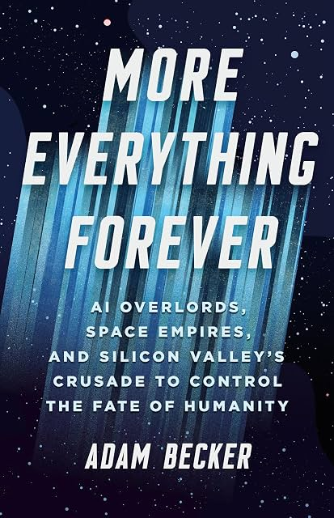

(Audio) More Everything Forever, by Becker
Tuesday July 21, 2026
Those "rationalists" are even weirder than I thought! Becker (who also wrote What is Real?) delivers an impassioned humanist history (e.g.), exposé, and analysis of a modern trend in the over-empowered misusing their power. It comes out (as Becker notes) very similar to the "TESCREAL bundle" analysis of Gebru and Torres. A lot of the book is of the form "so-and-so says X is good and inevitable, but there are reasons to think it's not either." Becker's concluding recommendation ("tax billionaires out of existence") seems a little tacked on and not fully argued, but I'm not sure it's a bad idea.

I mostly agree with Becker throughout. Below, I'm going to write my own thoughts as inspired by the book, which often overlap with its content but not completely.
Utilitarianism is nonsense
There are at least two important parts here:
- Quantifying utility as a single dimension isn't a good idea. There are standard Tyranny of Metrics problems. "Utils" over-simplify and are unavoidably subjective. The approach attempts to give the appearance of objectivity and knowledge of what might happen in the future, but it has neither.
- Utilitarians (at least longtermists) seem to use expected value to justify their decisions. Expected value is not a good decision tool when there's only one future. We don't get to roll out the future a billion times and collect the total utils across all of them.
Consciousness is irreducible
I still think Dennett and friends are being obtuse, at best. The consciousness of other humans is something you have to take on faith, and I do, but I wouldn't extend that to even a perfect simulation of my own brain. I don't see any reason to think a workspace (or any particular feature) grants conscious experience. I don't think current AI is even a little bit conscious. I don't know how it ever could be. I maintain that we don't know how consciousness works. I wouldn't believe in consciousness at all if not for it being my constant experience.
Some consequences:
- When will AI be conscious? Never.
- Do I want to die in a transporter? No.
- Would "uploading" my brain mean immortality? No.
Fast is different from FOOM
A singularity has slope going to infinity. The physical universe puts limits on speed, but actual speeds are likely to be much slower. I'm thinking AI as Normal Technology.
- The smarter you get, the harder it gets to know whether you're getting smarter. It's already hard (and expensive) to get reliable expert evaluations, even in math where things are relatively objective and checkable. Math can support automated verification with proof assistants like Lean, but even there knowing whether a "discovery" is good or important is socially constructed. In most domains you have to do something in the real world (build something, do an experiment) to know if you're even right. We will have to determine whether AI is really meaningfully "superhuman" by its accomplishments in creating things in the real world, which takes time.
- Chaos and irreducible complexity are everywhere. No amount of intelligence lets you achieve arbitrary goals. You can't predict the weather three weeks out. There seems to be a delusion that arbitrary deduction and control like in the shark-jumping Final Problem episode of Sherlock is a real threat.
- There's an argument that we should expect intelligence to follow a logistic curve rather than an exponential. I'm not sure about the exact form. When it comes to scientific knowledge, I think it could be an exception to limits-to-growth arguments. (See: The Beginning of Infinity)
Smarter isn't bad
People seem scared of AI getting smarter than them.
For one thing, given any human, some AI is already "smarter" in at least some way. (Go? Chess? Multiplication?)
If you're hiring for some position, surely you want to hire the smartest candidate you can find. You hope they'll be smarter than you. You do better work when you work with smart people.
When you went to college, were you afraid the professors would take over the world? No. You were happy to learn from them.
We should be so lucky as to have "superhuman" AI. We should see it improving the quality of everything - quite the opposite of "slop."
Projection from unsavory characters
The people who think Artificial Intelligence is the most important thing seem to be the people who think their own intelligence is very important.
The people who worry the most about AI being manipulative seem to be the most manipulative people.
The people who worry the most about AI killing all non-AI seem to be the people least concerned about people not like them.
Discussing goals can be good
They may be nuts, but at least some of these nuts are directly addressing the "what should we do" question. As in Inventing the Future, I think we need more and better proposals.